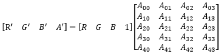

title: Color matrix effect description: Use the color matrix effect to alter the RGBA values of a bitmap. ms.assetid: 093EEEF1-8C38-414E-8261-58A6C3DD930D keywords:
Use the color matrix effect to alter the RGBA values of a bitmap.
You can use this effect to:
Many built-in effects are specializations of color matrix that are optimized for the intended use of the effects. Examples include saturation, hue rotate, sepia, and temperature and tint.
The CLSID for this effect is CLSID_D2D1ColorMatrix.
The example here shows the input and output images of the color matrix effect that swaps the red and blue channels.
| Before |
|---|
|
| After |
|
ComPtr<ID2D1Effect> colorMatrixEffect;
m_d2dContext->CreateEffect(CLSID_D2D1ColorMatrix, &colorMatrixEffect);
colorMatrixEffect->SetInput(0, bitmap);
D2D1_MATRIX_5X4_F matrix = D2D1::Matrix5x4F(0, 0, 1, 0, 0, 1, 0, 0, 1, 0, 0, 0, 0, 0, 0, 1, 0, 0, 0, 0);
colorMatrixEffect->SetValue(D2D1_COLORMATRIX_PROP_COLOR_MATRIX, matrix);
m_d2dContext->BeginDraw();
m_d2dContext->DrawImage(colorMatrixEffect.Get());
m_d2dContext->EndDraw();
This effect multiplies the RGBA values of the image by a 5x4, column major matrix as shown in this equation.

This effect works on straight and premultiplied alpha images.
| Display name and index enumeration | Description |
|---|---|
| ColorMatrix D2D1_COLORMATRIX_PROP_COLOR_MATRIX | A 5x4 matrix of float values. The elements in the matrix are not bounded and are unitless. The default is the identity matrix. The type is D2D1_MATRIX_5X4_F. The default value is Matrix5x4F(1, 0, 0, 0, 0, 1, 0, 0, 0, 0, 1, 0, 0, 0, 0, 1, 0, 0, 0, 0). |
| AlphaMode D2D1_COLORMATRIX_PROP_ALPHA_MODE | The alpha mode of the output. See Alpha modes for more info. The type is D2D1_COLORMATRIX_ALPHA_MODE. The default value is D2D1_COLORMATRIX_ALPHA_MODE_PREMULTIPLIED. |
| ClampOutput D2D1_COLORMATRIX_PROP_CLAMP_OUTPUT | Whether the effect clamps color values to between 0 and 1 before the effect passes the values to the next effect in the graph. The effect clamps the values before it premultiplies the alpha . If you set this to TRUE the effect will clamp the values. If you set this to FALSE, the effect will not clamp the color values, but other effects and the output surface may clamp the values if they are not of high enough precision. The type is BOOL. The default value is FALSE. |
| Name | Description |
|---|---|
| D2D1_COLORMATRIX_ALPHA_MODE_PREMULTIPLIED | The effect un-premultiplies the input, applies the color matrix, and premultiplies the output. |
| D2D1_COLORMATRIX_ALPHA_MODE_STRAIGHT | The effect applies the color matrix directly to the input, and doesn't premultiply the output. |
| Requirement | Value |
|---|---|
| Minimum supported client | Windows 8 and Platform Update for Windows 7 [desktop apps | Windows Store apps] |
| Minimum supported server | Windows 8 and Platform Update for Windows 7 [desktop apps | Windows Store apps] |
| Header | d2d1effects.h |
| Library | d2d1.lib, dxguid.lib |